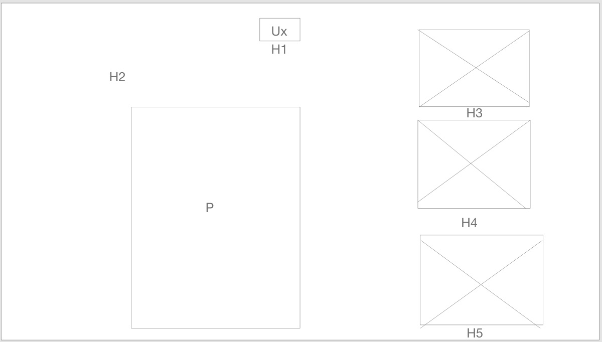
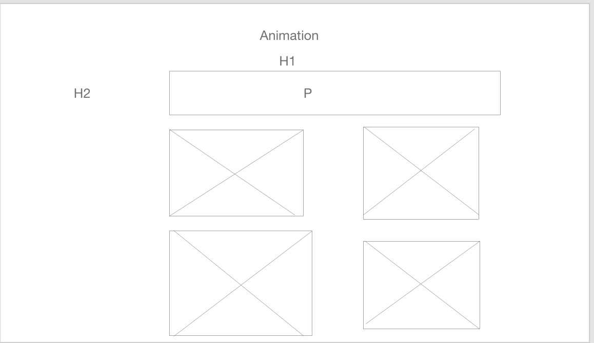

Portfolio
Inspiration fra egne projekter
I min portfolio-proces har jeg taget udgangspunkt i tidligere designs og kode fra mine andre 1.semester opgaver. Jeg har brugt metoder som styletile og wireframes, for at skabe mig et overblik over stil, form og farver der skal indgå i mit portfolio website.
Jeg har her forneden vist mit styletile og to af mine wireframes.

styletile

Wireframe for UX-siden
